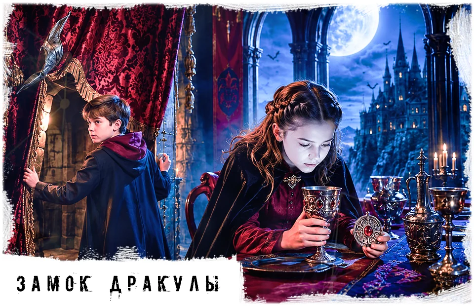
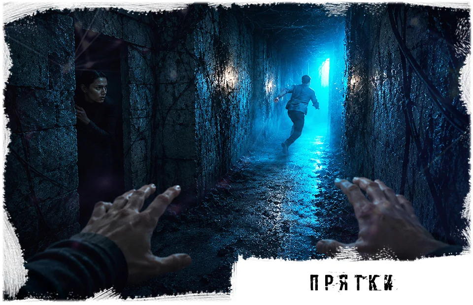
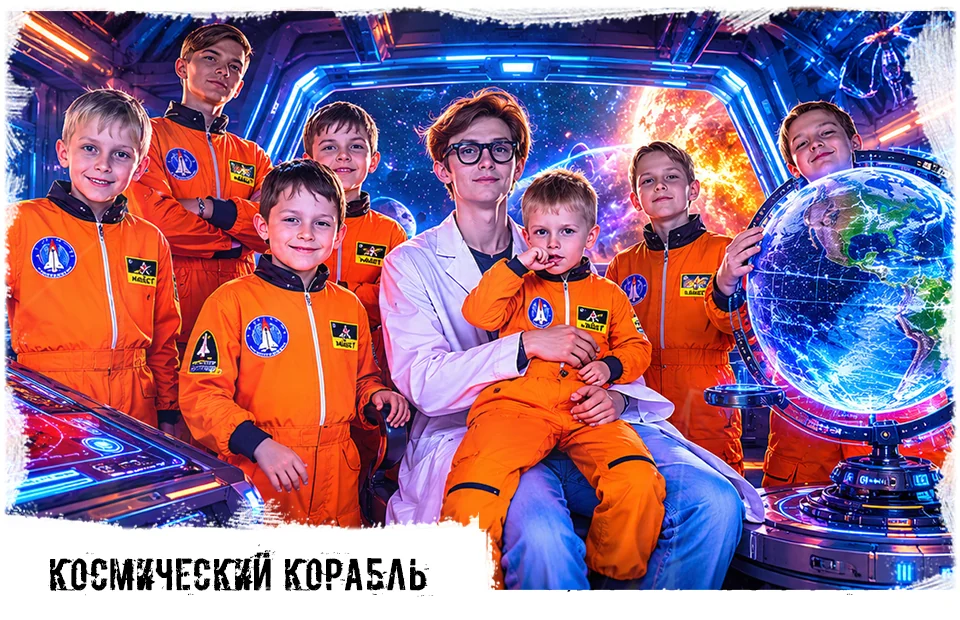
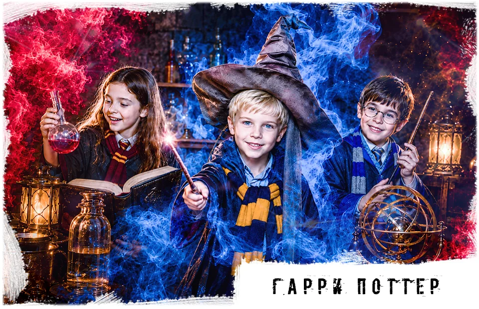
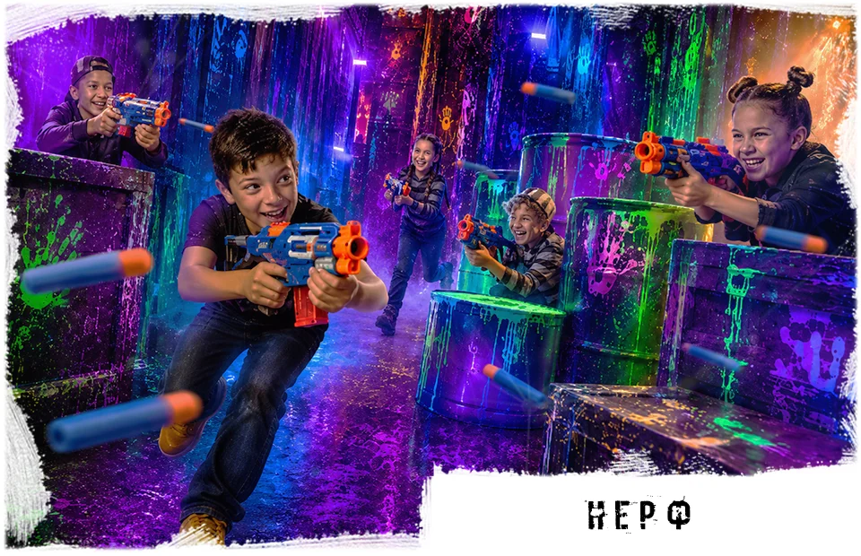
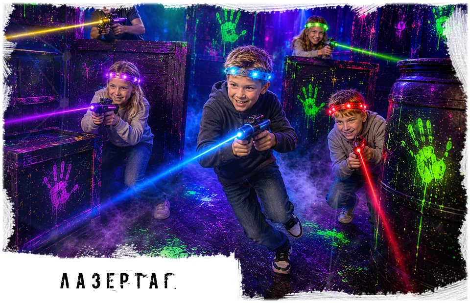
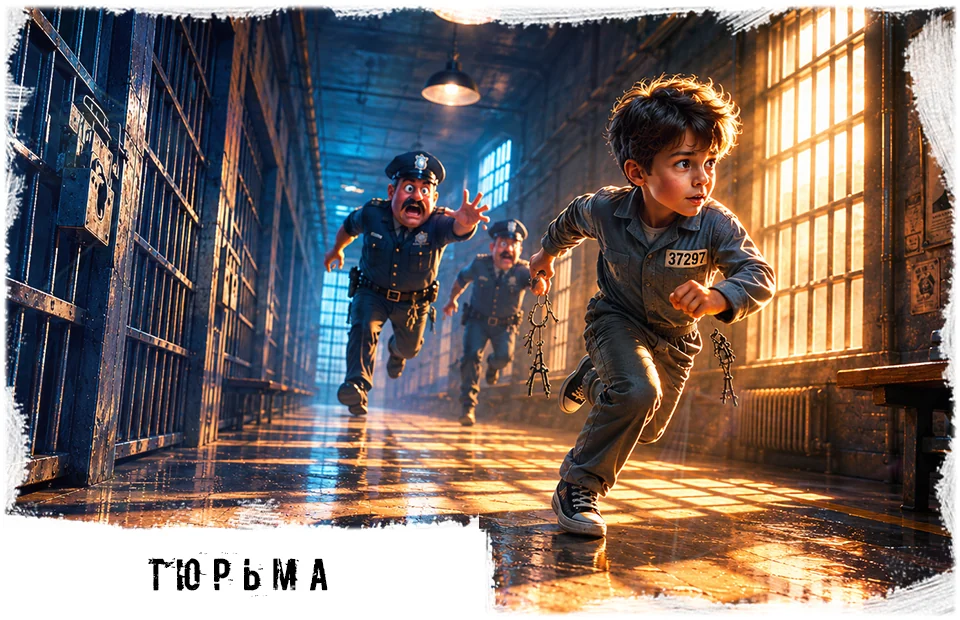

Детские квесты - от 1500 руб./чел. Итог зависит от города, сценария, даты, количества игроков и дополнительных услуг.
Детские квесты и активные игры по городам
Квесты и активные игры в Иркутске
Здесь собраны иркутские форматы для детского дня рождения и школьной компании. Все ссылки ведут сразу на нужную страницу услуги.






Квесты и активные игры в Ангарске
Здесь собраны ангарские форматы для детского дня рождения и школьной компании. Все ссылки ведут сразу на нужную страницу услуги.






День рождения с квестом
Квест хорошо работает как центральная часть детского дня рождения: сначала дети проходят игру, затем возвращаются к столу, поздравляют именинника и отдыхают.
Если нужен только час игровой программы, можно выбрать один сценарий. Если нужен полноценный праздник, к квесту добавляют чайную зону, поздравление и дополнительное время.
Перед бронью лучше назвать город, дату, возраст детей, количество игроков и желаемую атмосферу: волшебную, космическую, мистическую, командную или с персонажем.
Базовый формат
- возраст: обычно 7+;
- команда: 4-20 игроков;
- длительность: от 1 часа;
- стоимость: от 1500 руб./чел.;
- чайная зона и доп. время - по согласованию;
- бронь: 5000 руб. в день записи.
Цены и условия детских квестов
Это общий ориентир для двух городов. Точную стоимость, свободное время и адрес подтверждает администратор при бронировании.
Большинство детских сценариев рассчитано на 7+. Для подростков можно подобрать более динамичные или мистические форматы.
Обычно участвуют 4-20 детей. Если гостей больше, программу можно разделить на группы или добавить второй формат.
Иркутск: мк-н Юбилейный, 17 и ул. Баррикад, 33. Ангарск: ул. Восточная, 10А. Точный адрес зависит от сценария.
Для дня рождения можно согласовать стол, торт, напитки, поздравление, дополнительное время и обслуживание зоны отдыха.
Бронирование - 5000 руб. в день записи; остальная сумма оплачивается на месте. Доступны наличные и мобильный банк.
Перенос зависит от свободных окон. Возврат в отдельных случаях возможен не позднее чем за 10 дней по заявлению на email iquest38@mail.ru.
Администратор подскажет сценарий по возрасту, размеру компании, городу, уровню активности и формату праздника.
Частые вопросы
Как выбрать квест по возрасту?
Для 7-10 лет обычно лучше подходят волшебные, космические и приключенческие сценарии. Для подростков можно рассмотреть мистические, командные и более динамичные варианты.
Можно ли прийти с родителями?
Да. Родители могут сопровождать детей, ждать в зоне отдыха или участвовать в организации поздравления после игры.
Можно ли принести торт?
Да, для дня рождения можно принести торт, еду и напитки. Условия чайной зоны лучше согласовать до бронирования.
Что делать, если гостей больше 20?
Администратор подскажет, как разделить детей на команды или подобрать время так, чтобы программа прошла спокойно.
Где смотреть конкретные адреса?
На городских страницах: детские квесты в Иркутске и детские квесты в Ангарске. Там указаны площадки, доступные форматы и локальные условия.
Подобрать детский квест
Позвоните, и администратор поможет выбрать сценарий под возраст, город, дату и формат дня рождения.
Позвонить 8 (901) 666-888-1